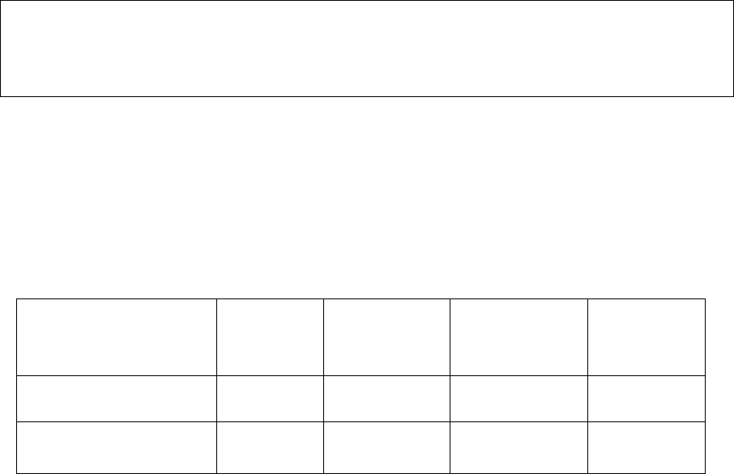

股票简称：平高电气 股票代码：600312 编号：临 2010—018
河南平高电气股份有限公司
关于股东股份减持的提示性公告
本公司董事会及全体董事保证本公告内容不存在任何虚假记载、误导性陈
述或者重大遗漏，并对其内容的真实性、准确性和完整性承担个别及连带责任。
河南平高电气股份有限公司（以下简称“公司”）于2010年5月7日接到股东上
海思源如高科技发展有限公司（以下简称“思源如高”）的函告，称其自2010年2
月10日起至2010年5月6日期间内通过上海证券交易所出售本公司股份总计836,300
股(占公司总股本的0.12%)，具体情况见下表：
日期 交易股数 留存股数 留存股数占平高
电气总股本比例
减持股数占
平高电气总
股本比例
2010 年 2 月 9 日收盘 - 34,700,000 5.08% -
2010 年 2 月 10 日起至
2010 年 5 月 6 日期间 -836,300 33,863,700 4.96% 0.12%
截止2010年5月6日收盘，思源如高尚持有本公司股票 33,863,700 股，占公
司股份总额的 4.96%，均为无限售条件流通股。
特此公告。
河南平高电气股份有限公司董事会
2010年5月8日